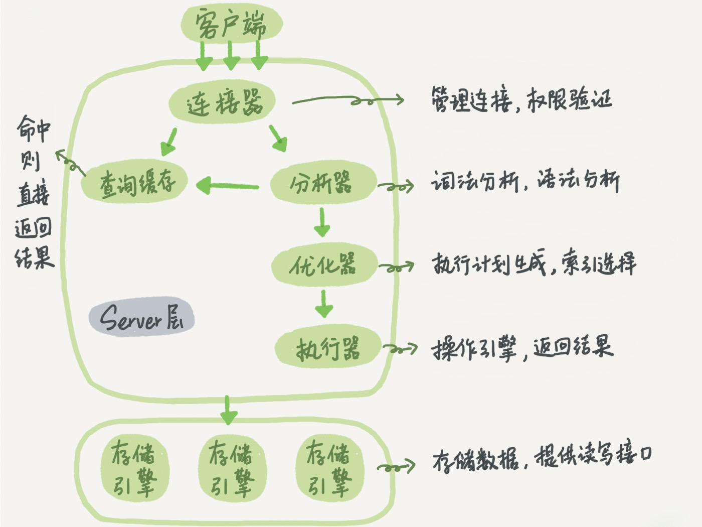

<!DOCTYPE html>


<html lang="en" >


<head>
  <meta charset="utf-8" />
    
  <meta name="viewport" content="width=device-width, initial-scale=1, maximum-scale=1" />
  <title>
    MySQL一条sql查询语句是如何执行的? |  孙云龙的技术博客
  </title>
  <meta name="generator" content="hexo-theme-yilia-plus">
  
  <link rel="shortcut icon" href="/favicon.ico" />
  
  <link rel="stylesheet" href="/dist/main.css">
  <link rel="stylesheet" href="/css/custom.css">
  
  <script src="https://cdn.jsdelivr.net/npm/pace-js@1.0.2/pace.min.js"></script>
  
  

  

<link rel="alternate" href="/atom.xml" title="孙云龙的技术博客" type="application/atom+xml">
</head>

</html>

<body>
  <div id="app">
    <main class="content on">
      <section class="outer">
  <article id="blog-mysql一条sql查询语句是如何执行的" class="article article-type-blog" itemscope
  itemprop="blogPost" data-scroll-reveal>

  <div class="article-inner">
    
    <header class="article-header">
       
<h1 class="article-title sea-center" style="border-left:0" itemprop="name">
  MySQL一条sql查询语句是如何执行的?
</h1>
 

    </header>
    

    
    <div class="article-meta">
      <a href="/2019/10/20/mysql一条sql查询语句是如何执行的/" class="article-date">
  <time datetime="2019-10-19T16:48:46.000Z" itemprop="datePublished">2019-10-20</time>
</a>
      
  <div class="article-category">
    <a class="article-category-link" href="/categories/数据库/">数据库</a>
  </div>

      
      
<div class="word_count">
    <span class="post-time">
        <span class="post-meta-item-icon">
            <i class="ri-quill-pen-line"></i>
            <span class="post-meta-item-text"> Word count:</span>
            <span class="post-count">1.4k</span>
        </span>
    </span>

    <span class="post-time">
        &nbsp; | &nbsp;
        <span class="post-meta-item-icon">
            <i class="ri-book-open-line"></i>
            <span class="post-meta-item-text"> Reading time≈</span>
            <span class="post-count">4 min</span>
        </span>
    </span>
</div>

      
    </div>
    

    
    
    <div class="tocbot"></div>


    

    
    <div class="article-entry" itemprop="articleBody">
      
      

      
      <p>[2019-10-13，2019-10-20]周计划：</p>
<p>1⃣️三道leetcode中等难度算法题<br>2⃣️MySQL实战45讲-基础篇1，2，3讲<br>3⃣️周六，日总结，写博客</p>
<p>本周学习了极客时间的MySQL实战45讲一课，本篇做一个总结。<br>先看一个普通的查询语句  </p>
<p><code>select * from user where id = 1</code>  </p>
<p>这条语句的执行过程是什么样的呢？废话不多说先上图：<br><br>大体来说MySQL可以分为server层和引擎层两部分，server层包括连接器，查询缓存，分析器，优化器，查询器等，覆盖MySQL的绝大多数核心服务功能，包括内置函数，存储过程，触发器，视图等都是在这一层实现的。<br>而引擎层则是负责数据的存储和提取，其架构模式是插件式的，比如InnoDB，MyISAM，Memory等多个存储引擎，现在最常用的是InnoDB，在MySQL5.5.5版本成为了默认引擎。接下来具体介绍一下每一个部分的作用：  </p>
<h3 id="1⃣️连接器："><a href="#1⃣️连接器：" class="headerlink" title="1⃣️连接器："></a>1⃣️连接器：</h3><p>如果要使用MySQL首先要做的事与MySQL建立连接，输入账户密码MySQL会到连接器中对该账号进行权限的验证，以后的所有操作都基于此时的权限，及时在这段时间管理员对你的账号修改了权限也不会影响到本次连接的其他操作。同时这里涉及到了长链接与短链接，大家知道与数据库的连接是比较消耗资源的，所以要尽可能的在一次连接做尽量多的事，不让资源浪费，这就是长链接，客户端如果太长时间没有操作，连接器会自动将它断开，这是wait_timeout控制的，默认是8个小时，当然可以根据自己的业务场景进行修改，综上所述更推荐使用长链接。  </p>
<h3 id="2⃣️查询缓存："><a href="#2⃣️查询缓存：" class="headerlink" title="2⃣️查询缓存："></a>2⃣️查询缓存：</h3><p>通过了连接器就可以到下一步，也就是查询缓存了，大多数情况下并不推荐使用查询缓存，为什么呢？<br>我们先来了解下查询缓存的工作原理，其实MySQL会把执行过的查询语句以key-value的形式储存起来，key是查询语句，value是结果，如果在查询缓存中可以找到匹配的key那么直接返回value，但有人说这不是很方便吗提高了查询速度，为什么不推荐使用呢？因为不仅仅存储这些语句和结果需要占用空间，还有个最关键的原因是当有任何对某张表的更新那么基于这张表的所有查询缓存全部清空，除非你是有一张静态表，很长时间不更新那么可以使用查询缓存。<br>使用方式？只需要设置参数query_cache_type（0—&gt;关闭，1—&gt;开始，2—&gt;只有在执行查询语句时，显示指定开始如下例子）</p>
<p><code>select SQL_CACHE * form user where id = 1</code>  </p>
<h3 id="3⃣️分析器："><a href="#3⃣️分析器：" class="headerlink" title="3⃣️分析器："></a>3⃣️分析器：</h3><p>如果没有命中查询缓存就要真正开始执行语句了，首先MySQL要知道你执行的是什么操作，分析器会先做词法分析，你输入的是一串字符串，MySQL会识别出关键词比如select，那么MySQL会知道这是一条查询语句，在把user识别为表名，当然也会有写错的时候，那么语法错误就是在这一层做的。</p>
<h3 id="4⃣️优化器："><a href="#4⃣️优化器：" class="headerlink" title="4⃣️优化器："></a>4⃣️优化器：</h3><p>通过了分析器证明sql语句写的没有问题，那么MySQL会根据你写的语句在内部做一个优化，是在有多个索引的时候进行比较，提到索引，可能大家都知道最左前缀原则，比如user表有联合索引 ‘A_B’ 当查询语句为下面这样时：  </p>
<p><code>select name from user where B = 10</code>  </p>
<p>这样写的话并不会命中索引是因为没有满足最左前缀原则，但如果我把语句改成：  </p>
<p><code>select name from user where B = 10 and A = 15</code><br>如果这样写msyql会通过分析器来去寻找索引，发现你的where条件里有A = 15那么MySQL会先执行A = 15这样就会命中索引。  </p>
<h3 id="5⃣️执行器："><a href="#5⃣️执行器：" class="headerlink" title="5⃣️执行器："></a>5⃣️执行器：</h3><p>终于通过重重关卡可以真正去执行语句了，执行的时候会先判断一下是否有这张表的权限（如果命中查询索引，那么会在返回结果是做权限验证），如果有权限就打开表继续执行，拿最开始语句举个例子：<br>(1)默认引擎是InnoDB，调用InnoDB引擎接口取user表的第一行，判断id是不是等于1，如果不是则跳过，如果是则将这行存在结果集中<br>(2)调用引擎接口“下一行”,重复(1)，直到user表的最后一行。<br>(3)执行器将上述遍历过程中所有满足条件的行组成记录集作为结果集返回给客户端。  </p>
<p>至此这个语句就执行完成了。</p>
<h3 id="1⃣️课后问题："><a href="#1⃣️课后问题：" class="headerlink" title="1⃣️课后问题："></a>1⃣️课后问题：</h3><p>比如执行 <code>select * form user where t = 10</code> 如果不存在t这一列，那么一定会报错，这个报错是在哪个阶段报出的？</p>
<p>答：在分析器，MySQL其实很大程度上受了oracle的影响。</p>
<h3 id="2⃣️看课后有同学问了一个问题：为什么对权限的检查不在优化器之前做呢？"><a href="#2⃣️看课后有同学问了一个问题：为什么对权限的检查不在优化器之前做呢？" class="headerlink" title="2⃣️看课后有同学问了一个问题：为什么对权限的检查不在优化器之前做呢？"></a>2⃣️看课后有同学问了一个问题：为什么对权限的检查不在优化器之前做呢？</h3><p>答：有些时候，SQL要操作的表不仅仅是字面上那些，比如有个触发器，得在执行器阶段(过程中)才能确定，优化器前是无能为力的。</p>

      
      <!-- reward -->
      
      <div id="reward-btn">
        Reward
      </div>
      
    </div>
    
    
      <!-- copyright -->
      
        <div class="declare">
          <ul class="post-copyright">
            <li>
              <i class="ri-copyright-line"></i>
              <strong>Copyright： </strong>
              Copyright is owned by the author. For commercial reprints, please contact the author for authorization. For non-commercial reprints, please indicate the source.
            </li>
          </ul>
        </div>
        
    <footer class="article-footer">
      
          
<div class="share-btn">
      <span class="share-sns share-outer">
        <i class="ri-share-forward-line"></i>
        分享
      </span>
      <div class="share-wrap">
        <i class="arrow"></i>
        <div class="share-icons">
          
          <a class="weibo share-sns" href="javascript:;" data-type="weibo">
            <i class="ri-weibo-fill"></i>
          </a>
          <a class="weixin share-sns wxFab" href="javascript:;" data-type="weixin">
            <i class="ri-wechat-fill"></i>
          </a>
          <a class="qq share-sns" href="javascript:;" data-type="qq">
            <i class="ri-qq-fill"></i>
          </a>
          <a class="douban share-sns" href="javascript:;" data-type="douban">
            <i class="ri-douban-line"></i>
          </a>
          <!-- <a class="qzone share-sns" href="javascript:;" data-type="qzone">
            <i class="icon icon-qzone"></i>
          </a> -->
          
          <a class="facebook share-sns" href="javascript:;" data-type="facebook">
            <i class="ri-facebook-circle-fill"></i>
          </a>
          <a class="twitter share-sns" href="javascript:;" data-type="twitter">
            <i class="ri-twitter-fill"></i>
          </a>
          <a class="google share-sns" href="javascript:;" data-type="google">
            <i class="ri-google-fill"></i>
          </a>
        </div>
      </div>
</div>

<div class="wx-share-modal">
    <a class="modal-close" href="javascript:;"><i class="ri-close-circle-line"></i></a>
    <p>扫一扫，分享到微信</p>
    <div class="wx-qrcode">
      
    </div>
</div>

<div id="share-mask"></div>
      
      
  <ul class="article-tag-list"><li class="article-tag-list-item"><a class="article-tag-list-link" href="/tags/mysql查询语句执行/">mysql查询语句执行</a></li><li class="article-tag-list-item"><a class="article-tag-list-link" href="/tags/数据库/">数据库</a></li></ul>


    </footer>

  </div>

  
  
  <nav class="article-nav">
    
      <a href="/2019/10/20/日志系统：一条SQL更新语句是如何执行的？/" class="article-nav-link">
        <strong class="article-nav-caption">上一篇</strong>
        <div class="article-nav-title">
          
            日志系统：一条SQL更新语句是如何执行的？
          
        </div>
      </a>
    
    
      <a href="/2019/09/27/Java基础部分之String/" class="article-nav-link">
        <strong class="article-nav-caption">下一篇</strong>
        <div class="article-nav-title">Java基础部分之String</div>
      </a>
    
  </nav>


  

  
  
<!-- valine评论 -->
<div id="vcomments-box">
    <div id="vcomments">
    </div>
</div>
<script src="//cdn1.lncld.net/static/js/3.0.4/av-min.js"></script>
<script src='https://cdn.jsdelivr.net/npm/valine@1.3.10/dist/Valine.min.js'></script>
<script>
    new Valine({
        el: '#vcomments',
        app_id: '',
        app_key: '',
        path: window.location.pathname,
        notify: 'false',
        verify: 'false',
        avatar: 'mp',
        placeholder: '给我的文章加点评论吧~',
        recordIP: true
    });
    const infoEle = document.querySelector('#vcomments .info');
    if (infoEle && infoEle.childNodes && infoEle.childNodes.length > 0) {
        infoEle.childNodes.forEach(function (item) {
            item.parentNode.removeChild(item);
        });
    }
</script>
<style>
    #vcomments-box {
        padding: 5px 30px;
    }

    @media screen and (max-width: 800px) {
        #vcomments-box {
            padding: 5px 0px;
        }
    }

    #vcomments-box #vcomments {
        background-color: #fff;
    }

    .v .vlist .vcard .vh {
        padding-right: 20px;
    }

    .v .vlist .vcard {
        padding-left: 10px;
    }
</style>

  

  
  
  

</article>
</section>
      <footer class="footer">
  <div class="outer">
    <ul class="list-inline">
      <li>
        &copy;
        2015-2020
        Gavin
      </li>
      <li>
        
        Powered by
        
        
        <a href="https://hexo.io" target="_blank">Hexo</a> Theme <a href="https://github.com/Shen-Yu/hexo-theme-ayer" target="_blank">Ayer</a>
        
      </li>
    </ul>
    <ul class="list-inline">
      <li>
        
        
        <span>
  <i>PV:<span id="busuanzi_value_page_pv"></span></i>
  <i>UV:<span id="busuanzi_value_site_uv"></span></i>
</span>
        
      </li>
      
      <li>
        <!-- cnzz统计 -->
        
        <script type="text/javascript" src='https://s9.cnzz.com/z_stat.php?id=1278069914&amp;web_id=1278069914'></script>
        
      </li>
    </ul>
  </div>
</footer>
      <div class="float_btns">
        <div class="totop" id="totop">
  <i class="ri-arrow-up-line"></i>
</div>

<div class="todark" id="todark">
  <i class="ri-moon-line"></i>
</div>

      </div>
    </main>
    <aside class="sidebar on">
      <button class="navbar-toggle"></button>
<nav class="navbar">
  
  <div class="logo">
    <a href="/"></a>
  </div>
  
  <ul class="nav nav-main">
    
    <li class="nav-item">
      <a class="nav-item-link" href="/">主页</a>
    </li>
    
    <li class="nav-item">
      <a class="nav-item-link" href="/archives">归档</a>
    </li>
    
    <li class="nav-item">
      <a class="nav-item-link" href="/categories">分类</a>
    </li>
    
    <li class="nav-item">
      <a class="nav-item-link" href="/tags">标签</a>
    </li>
    
    <li class="nav-item">
      <a class="nav-item-link" href="/about">关于我</a>
    </li>
    
  </ul>
</nav>
<nav class="navbar navbar-bottom">
  <ul class="nav">
    <li class="nav-item">
      
      <a class="nav-item-link nav-item-search"  title="Search">
        <i class="ri-search-line"></i>
      </a>
      
      
      <a class="nav-item-link" target="_blank" href="/atom.xml" title="RSS Feed">
        <i class="ri-rss-line"></i>
      </a>
      
    </li>
  </ul>
</nav>
<div class="search-form-wrap">
  <div class="local-search local-search-plugin">
  <input type="search" id="local-search-input" class="local-search-input" placeholder="Search...">
  <div id="local-search-result" class="local-search-result"></div>
</div>
</div>
    </aside>
    <script>
      if (window.matchMedia("(max-width: 768px)").matches) {
        document.querySelector('.content').classList.remove('on');
        document.querySelector('.sidebar').classList.remove('on');
      }
    </script>
    <div id="mask"></div>

<!-- #reward -->
<div id="reward">
  <span class="close"><i class="ri-close-line"></i></span>
  <p class="reward-p"><i class="ri-cup-line"></i>请我喝杯咖啡吧~</p>
  <div class="reward-box">
    
    <div class="reward-item">
      
      <span class="reward-type">支付宝</span>
    </div>
    
    
    <div class="reward-item">
      
      <span class="reward-type">微信</span>
    </div>
    
  </div>
</div>
    <script src="/js/jquery-2.0.3.min.js"></script>
<script src="/js/lazyload.min.js"></script>

<script>
  try {
    var typed = new Typed("#subtitle", {
      strings: ['面朝大海，春暖花开', '愿你一生努力，一生被爱', '想要的都拥有，得不到的都释怀'],
      startDelay: 0,
      typeSpeed: 200,
      loop: true,
      backSpeed: 100,
      showCursor: true
    });
  } catch (err) {
  }

</script>


<script src="/js/tocbot.min.js"></script>
<script>
  // Tocbot_v4.7.0  http://tscanlin.github.io/tocbot/
  tocbot.init({
    tocSelector: '.tocbot',
    contentSelector: '.article-entry',
    headingSelector: 'h1, h2, h3, h4, h5, h6',
    hasInnerContainers: true,
    scrollSmooth: true,
    scrollContainer: 'main',
    positionFixedSelector: '.tocbot',
    positionFixedClass: 'is-position-fixed',
    fixedSidebarOffset: 'auto'
  });
</script>


<script src="https://cdn.jsdelivr.net/npm/jquery-modal@0.9.2/jquery.modal.min.js"></script>
<link rel="stylesheet" href="https://cdn.jsdelivr.net/npm/jquery-modal@0.9.2/jquery.modal.min.css">
<script src="https://cdn.jsdelivr.net/npm/justifiedGallery@3.7.0/dist/js/jquery.justifiedGallery.min.js"></script>
<script src="/dist/main.js"></script>


<!-- Root element of PhotoSwipe. Must have class pswp. -->
<div class="pswp" tabindex="-1" role="dialog" aria-hidden="true">

    <!-- Background of PhotoSwipe. 
         It's a separate element as animating opacity is faster than rgba(). -->
    <div class="pswp__bg"></div>

    <!-- Slides wrapper with overflow:hidden. -->
    <div class="pswp__scroll-wrap">

        <!-- Container that holds slides. 
            PhotoSwipe keeps only 3 of them in the DOM to save memory.
            Don't modify these 3 pswp__item elements, data is added later on. -->
        <div class="pswp__container">
            <div class="pswp__item"></div>
            <div class="pswp__item"></div>
            <div class="pswp__item"></div>
        </div>

        <!-- Default (PhotoSwipeUI_Default) interface on top of sliding area. Can be changed. -->
        <div class="pswp__ui pswp__ui--hidden">

            <div class="pswp__top-bar">

                <!--  Controls are self-explanatory. Order can be changed. -->

                <div class="pswp__counter"></div>

                <button class="pswp__button pswp__button--close" title="Close (Esc)"></button>

                <button class="pswp__button pswp__button--share" style="display:none" title="Share"></button>

                <button class="pswp__button pswp__button--fs" title="Toggle fullscreen"></button>

                <button class="pswp__button pswp__button--zoom" title="Zoom in/out"></button>

                <!-- Preloader demo http://codepen.io/dimsemenov/pen/yyBWoR -->
                <!-- element will get class pswp__preloader--active when preloader is running -->
                <div class="pswp__preloader">
                    <div class="pswp__preloader__icn">
                        <div class="pswp__preloader__cut">
                            <div class="pswp__preloader__donut"></div>
                        </div>
                    </div>
                </div>
            </div>

            <div class="pswp__share-modal pswp__share-modal--hidden pswp__single-tap">
                <div class="pswp__share-tooltip"></div>
            </div>

            <button class="pswp__button pswp__button--arrow--left" title="Previous (arrow left)">
            </button>

            <button class="pswp__button pswp__button--arrow--right" title="Next (arrow right)">
            </button>

            <div class="pswp__caption">
                <div class="pswp__caption__center"></div>
            </div>

        </div>

    </div>

</div>

<link rel="stylesheet" href="https://cdn.jsdelivr.net/npm/photoswipe@4.1.3/dist/photoswipe.min.css">
<link rel="stylesheet" href="https://cdn.jsdelivr.net/npm/photoswipe@4.1.3/dist/default-skin/default-skin.min.css">
<script src="https://cdn.jsdelivr.net/npm/photoswipe@4.1.3/dist/photoswipe.min.js"></script>
<script src="https://cdn.jsdelivr.net/npm/photoswipe@4.1.3/dist/photoswipe-ui-default.min.js"></script>

<script>
    function viewer_init() {
        let pswpElement = document.querySelectorAll('.pswp')[0];
        let $imgArr = document.querySelectorAll(('.article-entry img:not(.reward-img)'))

        $imgArr.forEach(($em, i) => {
            $em.onclick = () => {
                // slider展开状态
                // todo: 这样不好，后面改成状态
                if (document.querySelector('.left-col.show')) return
                let items = []
                $imgArr.forEach(($em2, i2) => {
                    let img = $em2.getAttribute('data-idx', i2)
                    let src = $em2.getAttribute('data-target') || $em2.getAttribute('src')
                    let title = $em2.getAttribute('alt')
                    // 获得原图尺寸
                    const image = new Image()
                    image.src = src
                    items.push({
                        src: src,
                        w: image.width || $em2.width,
                        h: image.height || $em2.height,
                        title: title
                    })
                })
                var gallery = new PhotoSwipe(pswpElement, PhotoSwipeUI_Default, items, {
                    index: parseInt(i)
                });
                gallery.init()
            }
        })
    }
    viewer_init()
</script>


<script src="/js/busuanzi-2.3.pure.min.js"></script>


<script type="text/javascript" src="https://js.users.51.la/20544303.js"></script>


    
  </div>
</body>

</html>